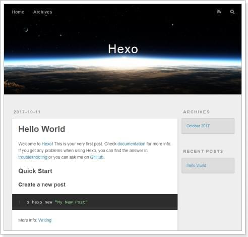
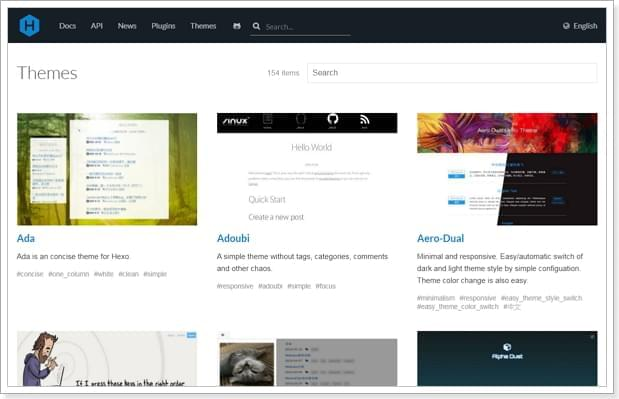
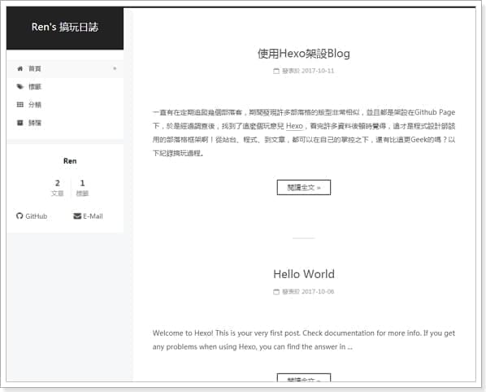
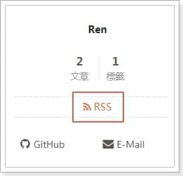
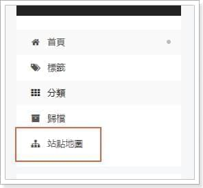
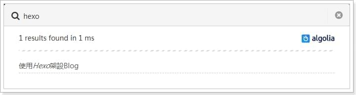
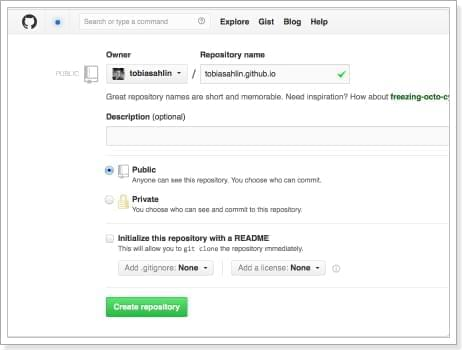
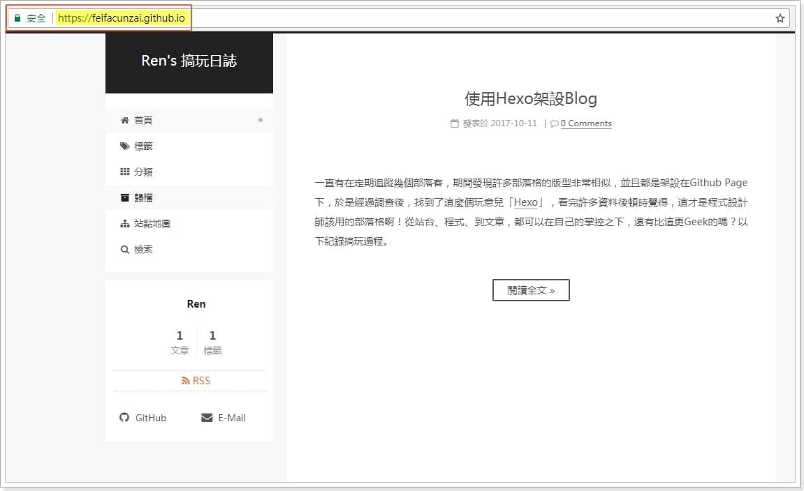

一直有在定期追蹤幾個部落客，期間發現許多部落格的版型非常相似，並且都是架設在Github Page下，於是經過調查後，找到了這麼個玩意兒「Hexo」，看完許多資料後頓時覺得，這才是程式設計師該用的部落格啊！從站台、程式、到文章，都可以在自己的掌控之下，還有比這更Geek的嗎？以下紀錄搞玩過程。
Quick Start
官方網站的教學真的簡潔明瞭，短短五行的指令就完成架設，我就喜歡這麼簡單的東西😂
安裝並建立Hexo專案
1 | $ npm install hexo-cli -g |
在本機架設部落格站台
1 | $ npm install |
用瀏覽器查看執行結果
部落格已經架設完成了，也太簡單了吧！

主題
要如何讓網站變得好看呢？理論上來說，程式就在自己手上，想怎麼改？就怎麼改！但可憐我前端只是個略懂略懂的人，在變強前還是套版就好了😏
物色一個喜歡的主題
可以從官方網站的主題頁看到上百個主題，由於都是Open Source，不滿意也能自己進行修改，在這裡我就挑一個較多人推薦「Next」進行套版。

下載主題至Hexo專案
1 | $ mkdir themes/next |
修改專案設定擋
在專案目錄下可以找到_config.yml，打開後找到theme並修改為next。
1 | # Extensions |
驗證套用結果
這時重整頁面就可以看到美美的主題了，而且程式與文章都是不相依於主題的，隨時都可以換另一套，或是對主題進行修改，不用怕文章壞掉，是不是很棒呢？

外掛
Hexo有豐富的外掛資源，畢竟想要一個完美的網站就現階段來說還是不夠的，在這裡列出本站用到了哪一些外掛，但不會細寫出安裝步驟(我寫的也一定沒官方詳細☺)，雖然有些外掛可能需要配合主題相應的微調，這部分就留給大家自己摸索啦😘
RSS
hexo-generator-feed
雖然自己沒用過RSS，但看大家都有，這我還不裝一個先！

Emoji
hexo-filter-github-emojis
Hexo的Markdown渲染器是不支援Emoji的，我找到好幾個外掛可以做這件事，最後挑了這款，只因為使用方式夠簡單！ 😆😲😱 😎😇🤘
Sitemap
hexo-generator-sitemap
想讓更多人來部落格嗎？讓搜尋引擎更容易找出你的網站吧！記得再看看robots.txt喔。

Search
hexo-algolia
現在才知道還有Algolia這種專門的搜尋服務，不用自己寫就可以在站內添加搜尋引擎，雖然免費的有使用量限制，但短期內也應該足夠使用了。

佈署
終於到了最後一步，馬上就要將站台上線了，激動啊！官方列出了多個佈署範例，這裡選用Git來做佈署。
建立Git Repository

安裝佈署外掛
1 | $ npm install hexo-deployer-git --save |
修改佈署參數
打開我們的_config.yml，修改相關參數為Git Page。
1 | # URL |
1 | # Deployment |
執行佈署指令
這裡我有使用gulp對靜態資源做優化與Algolia做搜尋，不需要的人只用輸入hexo g與hexo d就發佈完成了。
1 | $ hexo algolia |
架設一個部落格是不是很簡單呢？大家一起來建自己的部落格吧😆

參考資料
Hello World–Hexo + Oschina 搭建个人博客
Hexo博客的优化
hexo的next主题个性化配置教程